Windows 검증
연습전 4웨이브와 두 클라이언트의 매칭·재접속·공용 배치 마감·기권을 확인했습니다. 창을 닫을 때 충돌이 재현됐습니다.
두 사람이 각자 지휘관을 지키는 모바일 1대1 디펜스입니다. 매 라운드, 같은 적이 몰려오기 전에 내 전장에는 타워를 놓고 상대 전장에는 병력을 보냅니다. 배치가 끝나면 전투는 자동으로 진행됩니다.
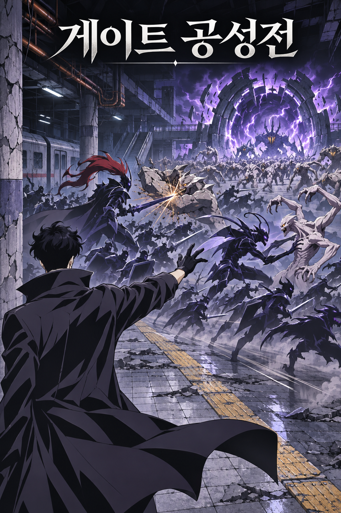
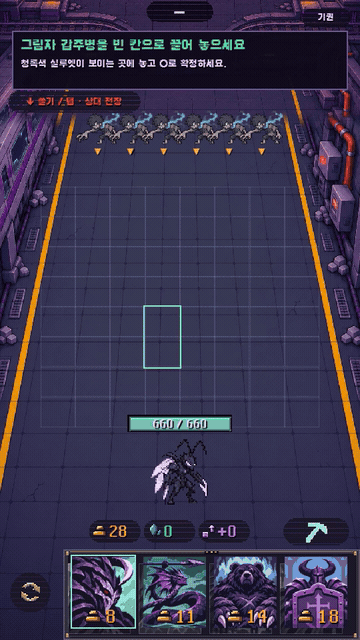
유닛 능력과 출현 웨이브, 전투 화면, 아트와 개발 기록을 찾아볼 수 있습니다.
두 플레이어가 매 턴 내 지휘관을 지킬 배치와 상대 방어선을 뚫을 파견을 함께 고민하도록 기획했습니다. 배치·일꾼·파견 디펜스를 모바일 세로 화면의 짧은 1대1로 줄이고, 그림자 군단·헌터·마수 세계관을 입혔습니다.
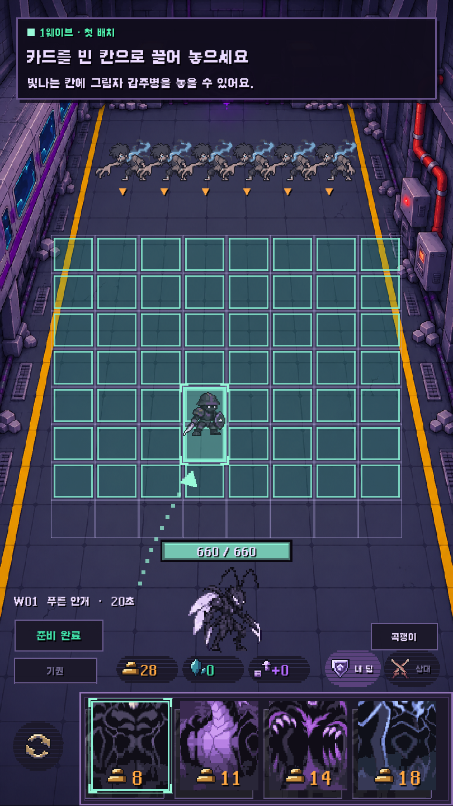
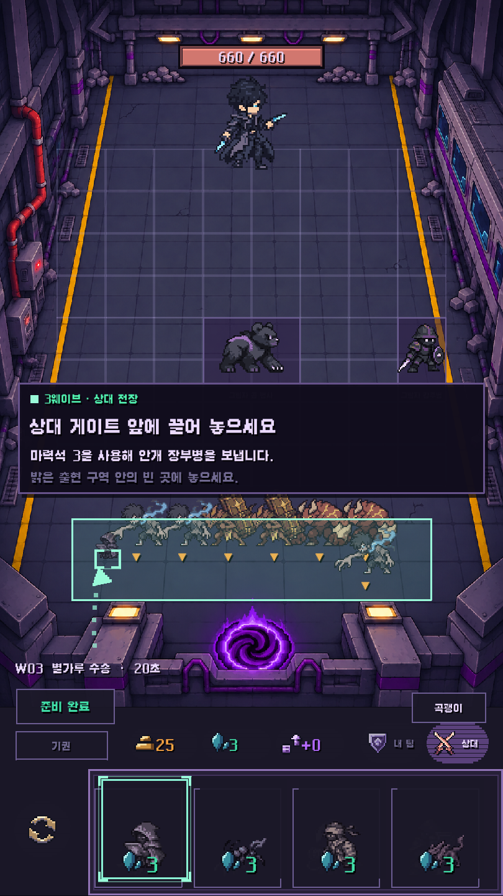
주 대상은 자신이 만든 방어선이 다른 사람에게도 통하는지 겨뤄 보고 싶은 모바일 디펜스 유저입니다. 카드 대전 유저와 원작 팬에게는 서로 다른 입문 동기가 있습니다.
 협회 정찰 헌터위협 식별 · 적에게 표식 부여
협회 정찰 헌터위협 식별 · 적에게 표식 부여 안개 잠식체조준표식 대상
안개 잠식체조준표식 대상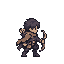
마력 궁수기본 공격으로 표식 소모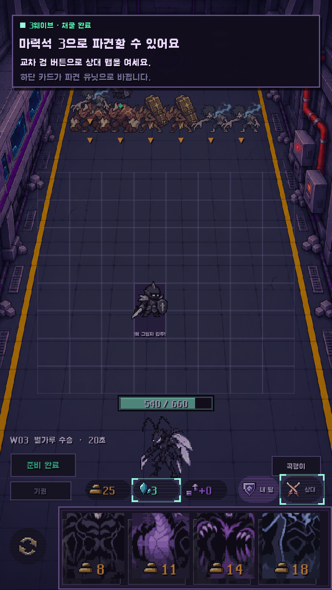
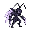
지휘관 베르군단의 응급 치유 탱크피해를 받고 체력 35% 이하로 생존
탱크피해를 받고 체력 35% 이하로 생존클래시 로얄과는 카드로 겨루는 1대1 공방이, 운빨존많겜과는 병력을 키워 몰려오는 적을 막는 재미가 겹칩니다. 세 게임의 차이는 언제 무엇을 보고 다음 수를 정하느냐에 있습니다.
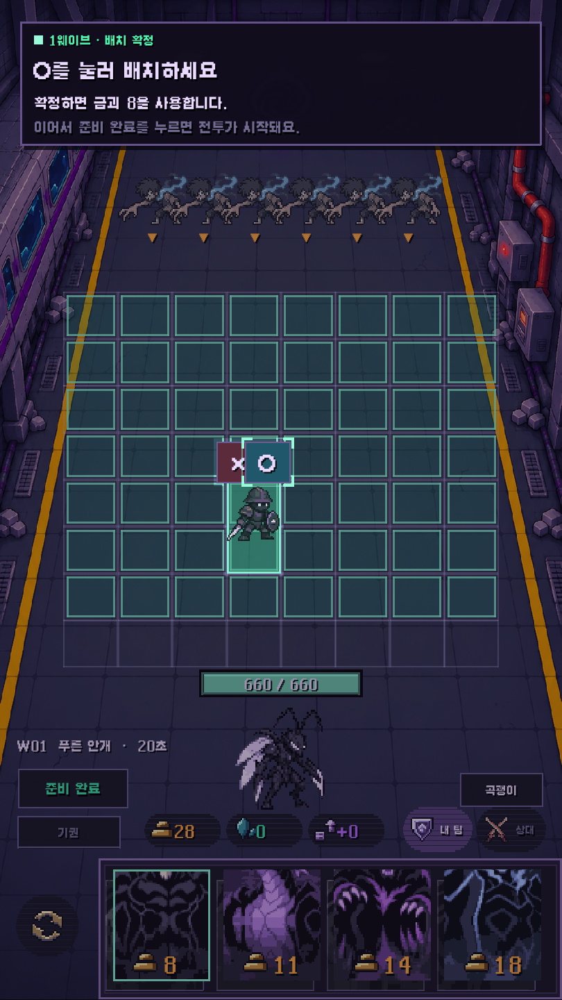


| 게임 | 상대와 목표 | 판단하는 시점 | 기대하는 재미 |
|---|---|---|---|
| 게이트 공성전 | 1대1. 내 지휘관을 지키면서 상대 방어선을 공략합니다. | 전투 전, 상대의 지난 진형과 이번 출현 예고를 보고 배치와 파견을 확정합니다. | 내 진형은 버티고 내가 보낸 병력은 상대의 빈틈을 파고드는 장면 |
| 클래시 로얄 | 표준 1대1. 한 전장에서 상대 타워를 공격합니다. | 전투 중, 상대가 낸 카드와 내게 남은 엘릭서를 보고 즉시 대응합니다. | 알맞은 카드로 공격을 막고 살아남은 병력으로 역습하는 순간 |
| 운빨존많겜 | 기본 협동 모드. 동료와 함께 몬스터 웨이브를 돌파합니다. | 웨이브 도중, 무작위 소환과 합성 결과에 맞춰 조합을 바꿉니다. | 기다리던 영웅이 나와 동료와 함께 위기를 넘기는 순간 |
클래시 로얄 공식 소개 · 표준 1대1 전투 · 운빨존많겜 공식 소개
상대가 막을 웨이브를 직접 바꾸고, 내가 키울 부대는 첫 카드부터 계획할 수 있습니다. 두 비교작의 플레이어에게 제안하는 재미입니다.
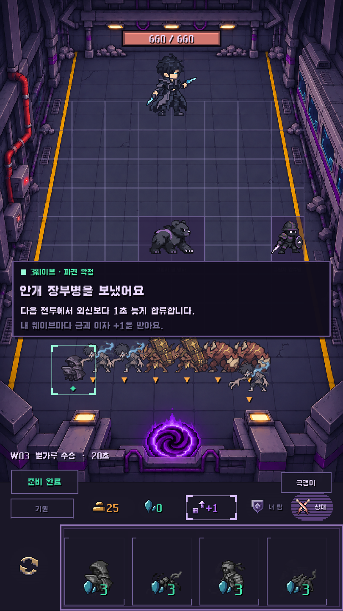
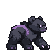
그림자 곰 병사Ⅰ · 소환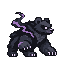
정예 그림자 곰Ⅱ · 첫 진화탱크Ⅲ · 최종 진화검증할 가설 · 비교작 유저가 첫 판 뒤 파견 위치나 진화 순서를 바꿔 보고 싶어 스스로 재대전을 시작하는지 확인할 예정입니다.
그림자·헌터·마수 중 지휘관 한 명을 고르고, 같은 진영의 타워와 파견 카드를 8장씩 편성합니다. 지휘관의 고유 능력은 방어와 파견에 영향을 줍니다.

타워에 금괴를 써 이번 공격을 막거나, 광부를 고용해 다음 파견을 앞당깁니다. 상대 진형을 읽고 게이트 앞 파견 위치를 골라 첫 교전을 흔드는 것이 이 게임의 핵심 가설입니다.
홈의 전투 메뉴에서 베르의 첫 연습전을 엽니다. 적이 한 차례 몰려오는 전투를 웨이브라고 하며, 셋째 웨이브에는 공격 유닛인 인컴을 보냅니다.

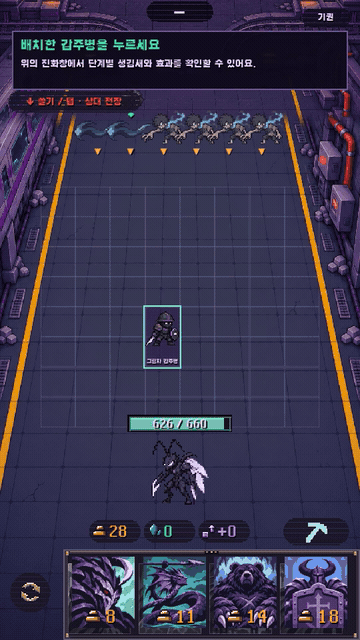
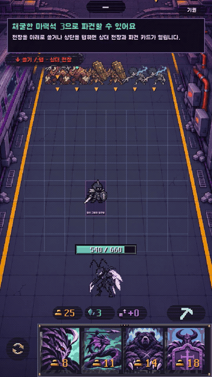
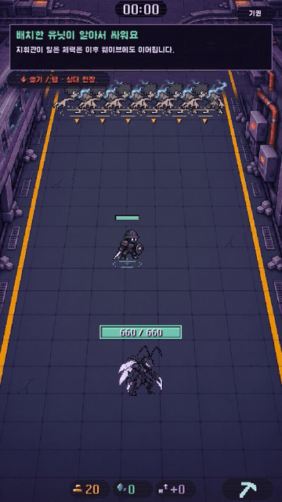
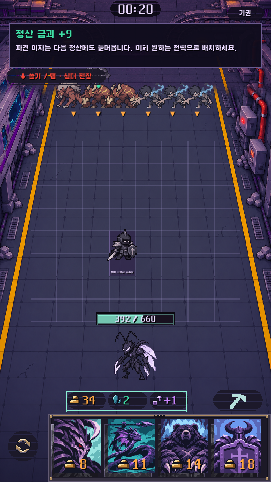
연습전은 W1~W3에서 과제를 마치면 2초 뒤 자동으로 전투를 시작합니다. W4부터는 일반 배치 타이머를 사용합니다.
쓰러진 타워는 다음 웨이브에 돌아옵니다. 지휘관 체력은 전투 뒤에도 회복되지 않으며, 먼저 0이 되면 패배합니다.
지휘관은 전장 끝에서 타워를 지원합니다. 예를 들어 베르는 위기에 처한 아군을 치유합니다. 카드를 누르면 발동 조건과 능력치를 볼 수 있습니다.
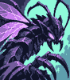
체력이 35% 이하로 내려간 아군을 치유합니다.
타워는 내 전장에 놓는 방어 유닛입니다. 전투가 시작되면 배치한 칸에서 출발합니다. 카드를 눌러 소환형부터 최종 진화까지 봅니다.
인컴은 상대 전장에 보내는 공격 유닛입니다. 파견에는 광부가 캔 마력석을 씁니다. 카드를 눌러 비용과 매번 받을 이자를 봅니다.
외신은 28계통, 계통마다 3단계로 총 84형태입니다. 카드에 표시된 단계와 첫 출현 웨이브를 확인하고, 카드를 눌러 공격 방식과 대응법을 볼 수 있습니다.
곡괭이 버튼으로 광산을 열어 광부를 고용합니다. 한 차례의 전투가 끝날 때마다 마력석을 받습니다. 생산량은 진영마다 다른 주기로 반복됩니다.
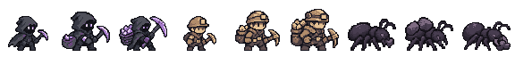
이름·종류·진영으로 카드를 찾고, 카드를 눌러 수치와 능력을 확인합니다.
스킨을 고르면 양쪽 전장과 광산이 함께 바뀝니다. 양쪽 시점에 따라 게이트 방향이 바뀝니다. 전투에 쓰는 배치 칸과 이동 경로는 그대로입니다.
아래는 레드 게이트 스타일로 다시 만든 Workspace 배경 시안입니다. 문서의 Unity 시연은 현재 게임에 들어 있는 배경으로 촬영했습니다.
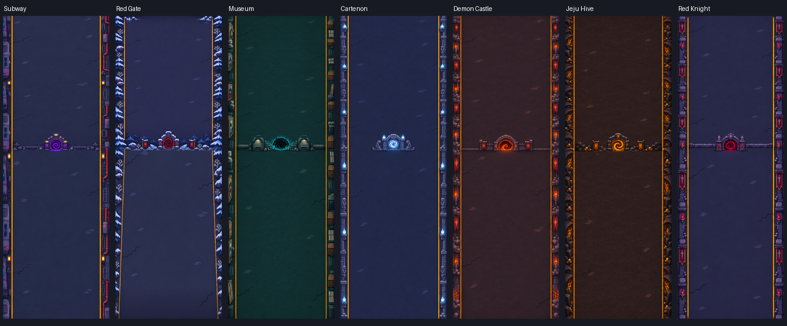
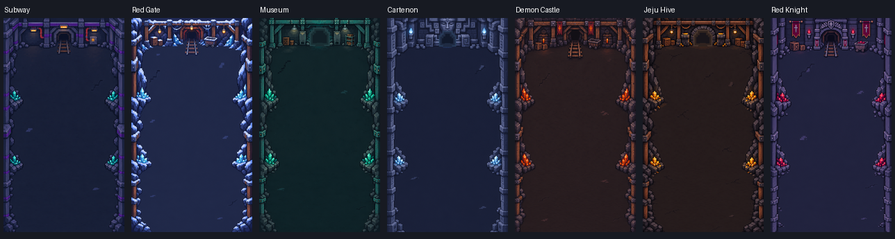
내 전장에 타워를 놓습니다. 아래로 쓸면 상대 전장이 열립니다. 상대 게이트 앞에 인컴을 놓고 위로 쓸면 내 전장으로 돌아옵니다.
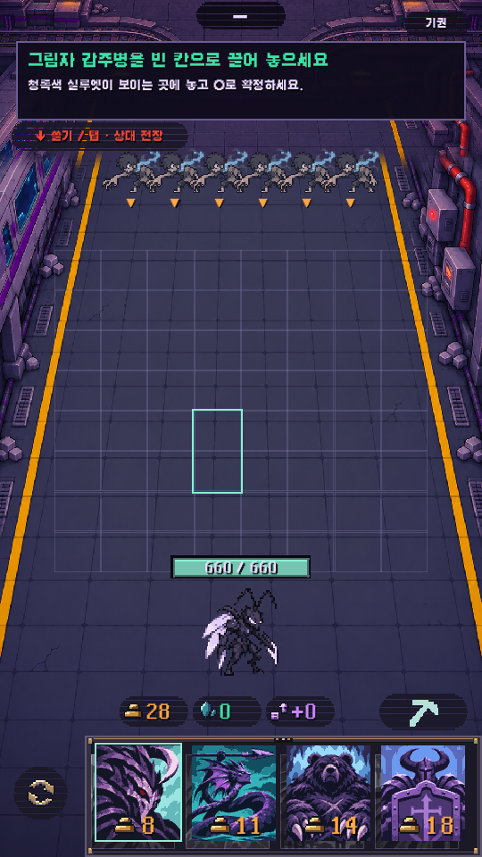
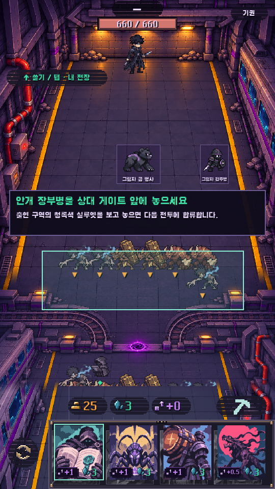
Unity 테스트 빌드 캡처. 이미지를 누르면 원본을 확대합니다.
테스트 상점에서 스킨 7종을 고를 수 있습니다. 선택한 테마를 전장과 광산에 함께 적용합니다. 스킨을 바꿔도 유닛 능력이나 채굴량은 같습니다.
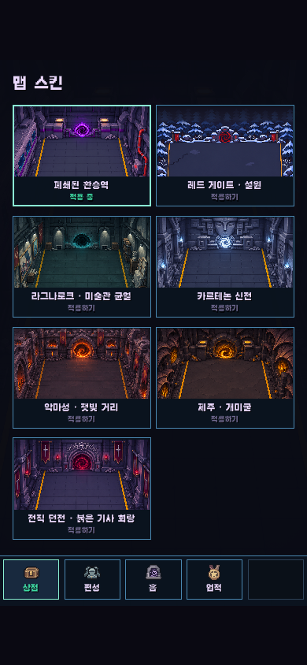
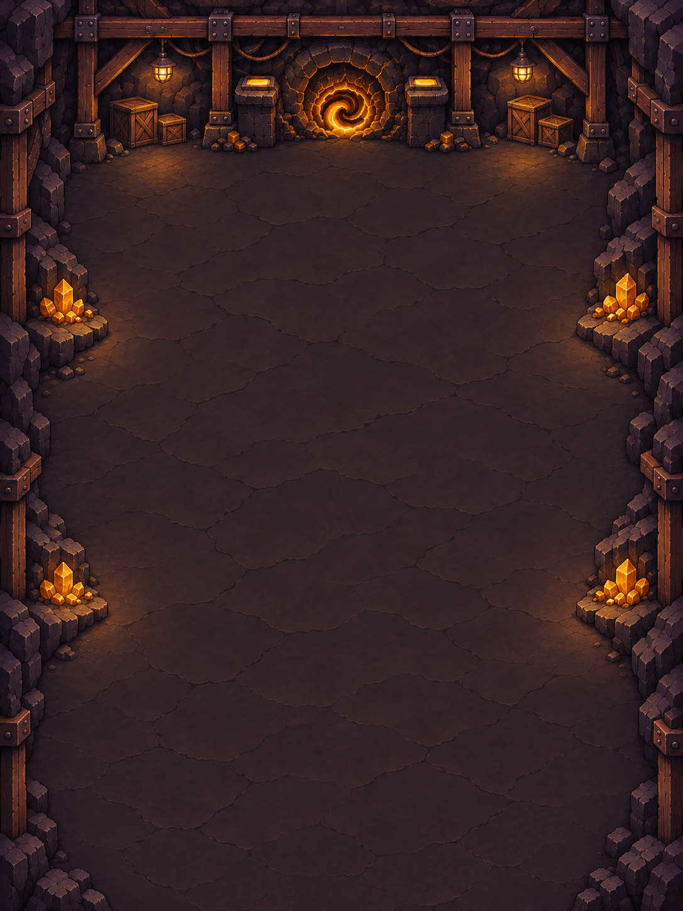
양쪽 전장에 같은 외신이 출현합니다. 웨이브를 고르면 적의 종류·수와 대응법을 확인할 수 있습니다.
타워를 선택하고 ▲를 눌러 금괴로 진화합니다. 정예형은 W2, 최종형은 W4부터 열립니다.

기획 의도 최초 소환 때부터 최종 네임드를 알 수 있게 해 덱의 성장 경로를 계획하게 합니다. 전투 중에는 새 타워로 빈자리를 채울지, 이미 확보한 자리를 강화할지 금괴를 두고 선택합니다.
카드마다 I 소환형, II 정예형, III 최종 네임드가 고정됩니다. W1에는 소환형을 놓고 W2부터 정예형, W4부터 최종형을 해금합니다. 타워 한 기는 배치 단계에서 웨이브마다 한 번만 진화합니다. 진화 시 기준 칸과 점유 크기를 유지하면서 도트와 능력이 바뀝니다.
탱크 진화 예시 그림자 곰 병사는 인접한 적을 밀어냅니다. 정예형은 전방 적 최대 2기를 밀고, 최종형 탱크는 가장 가까운 적 앞으로 최대 2칸 돌진한 뒤 주 대상과 주변 적을 밀어냅니다.
금괴로 광부를 고용해 마력석을 캡니다. 마력석을 써 상대 게이트 앞에 인컴을 보내면 그 웨이브부터 금괴 이자가 붙습니다.
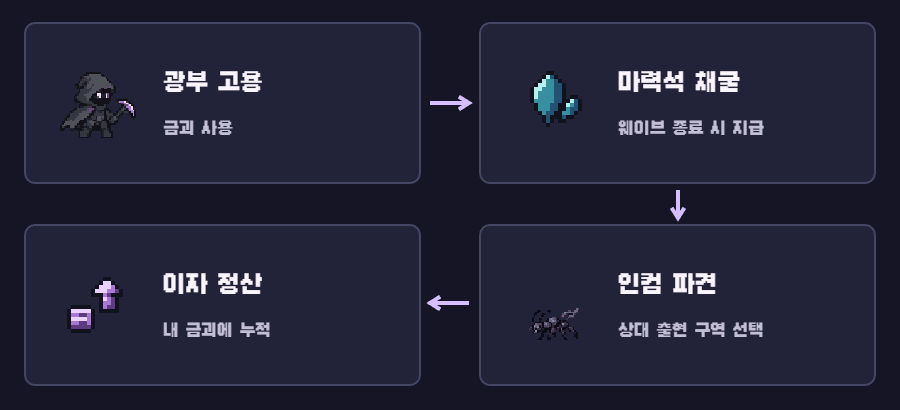
기획 의도 타워와 광부가 같은 금괴를 두고 경쟁하게 해 지금의 방어력과 이후의 파견 기회 사이에서 선택을 만듭니다. 파견한 유닛이 방어선을 뚫지 못해도 이자가 남아, 작은 파견을 일찍 할 이유가 생깁니다.
같은 비용에서 이자형은 더 많은 이자를, 전투형은 더 높은 체력과 공격력을 얻습니다. 파견으로 얻은 이자는 매치가 끝날 때까지 남습니다.
이자형은 같은 비용에서 웨이브당 금괴 수입을 더 올리고, 전투형은 체력·공격 배율로 상대 방어에 압박을 줍니다. 파견 시 카드의 이자가 매치 종료까지 누적됩니다. 첫 지급은 확정한 웨이브의 내 정산이며, 파견 유닛의 생존이나 돌파 여부와 관계없이 받습니다.
마력석 3의 선택 먹결 정찰개미는 웨이브마다 금괴 이자 +1을 더합니다. 갈래턱 그림자개는 이자 +0.5를 더하며 첫 물기로 기본 공격 피해의 130%를 줍니다.
스킨은 전장과 광산의 외형만 바꿉니다. 승리나 패배 뒤에 상자 1개를 주는 안입니다. 하루 5개 제한과 무승부 보상은 검토 중입니다.

기획 의도 전장과 광산의 외형으로 취향을 보여 주게 하고, 전투 판정은 모든 플레이어에게 동일하게 적용합니다. 승패마다 참여 보상을 주되 하루 한도로 획득량을 조절합니다.
환승역의 양쪽 시점 같은 벽 매립형 게이트를 내 전장에서는 위쪽, 상대 전장에서는 아래쪽에서 봅니다. 광산에는 정비동의 철로와 청록 광맥이 이어집니다.
홈에서 편성을 열면 지휘관·타워·인컴 유닛이 각각의 탭에 나옵니다. 카드 탭에서는 위의 8장 덱과 아래 보유 카드를 드래그로 교체하거나 재정렬합니다.
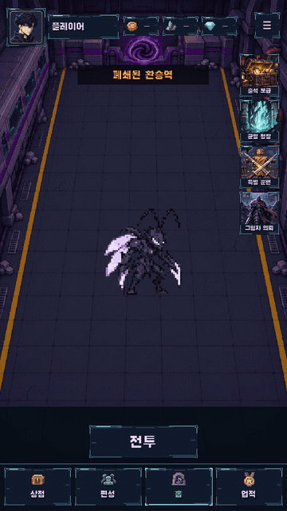
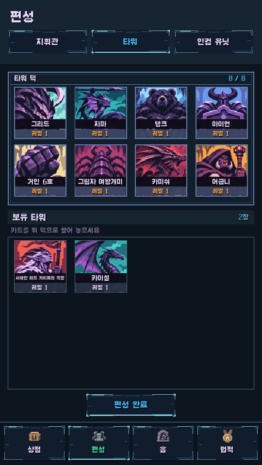
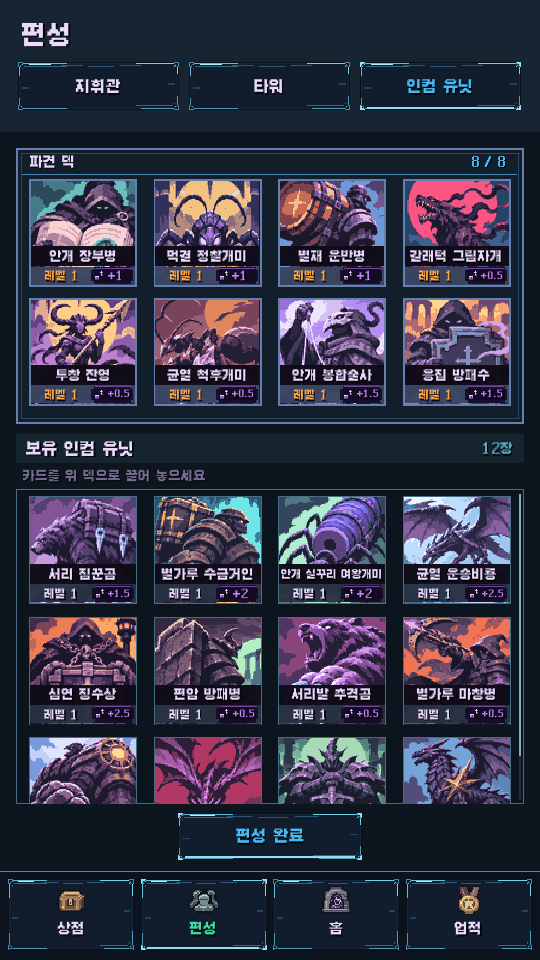
기획 의도 편성 중에는 지금 덱에 있거나 바꿀 수 있는 카드를 빠르게 구분하고, 전투 중에는 같은 위치에서 내 방어와 상대 파견을 조작하게 합니다.
지휘관 1명·타워 8장·인컴 8장이 채워지면 편성을 확정할 수 있습니다. 홈 이벤트 중 특별 훈련은 연습전과 연결되며, 미연동 계정 재화는 잔액 대신 대시를 표시합니다.
배치 중에만 핸드가 보입니다. 내 전장에서는 타워, 상대 전장에서는 인컴입니다. 상단 중앙은 배치 남은 시간 또는 전투 경과 시간을 표시하며 웨이브 이름은 표시하지 않습니다.
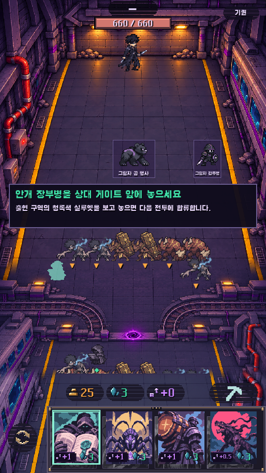
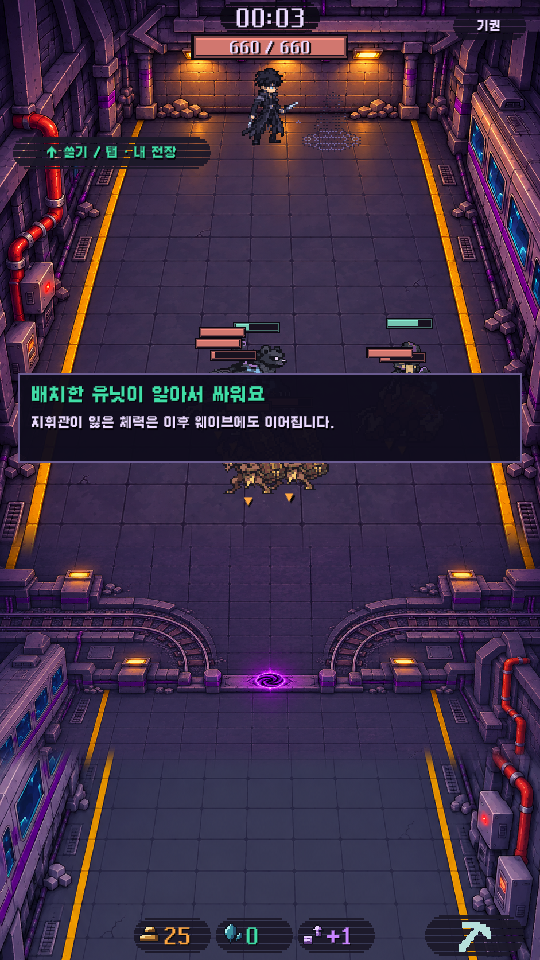
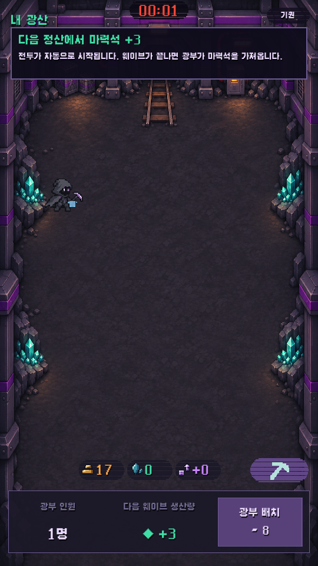
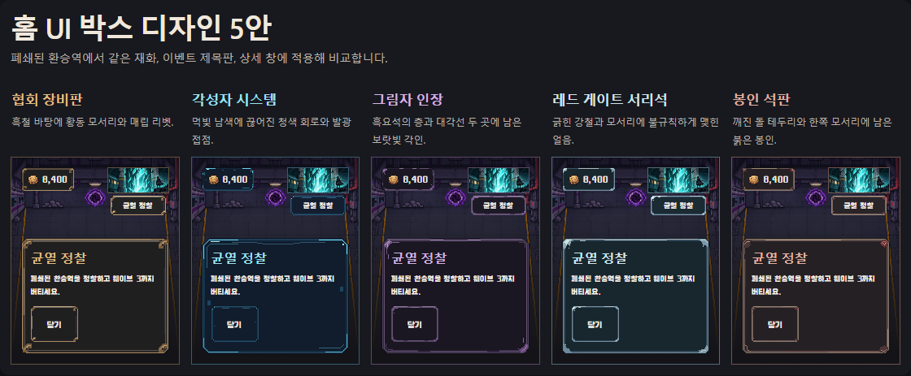
48×48 원본의 모서리 14px를 유지하는 9분할. 홈은 각성자 시스템의 청색 회로를 기준으로 합니다.
전장에서 아래로 쓸면 상대 전장, 위로 쓸면 내 전장으로 이동합니다. 상단 탭으로도 전환하며, 드래그로 화면이 움직였으면 손을 떼는 순간 반대편까지 이동합니다. 타워·인컴 카드 박스에서는 위아래로 밀어 4장씩 넘깁니다. 전투 중엔 재화와 곡괭이가 최하단으로 내려가지만, 광산에서는 배치 때와 같은 위치를 유지합니다.
카드를 끄는 동안 격자 대신 유닛 실루엣을 표시합니다. 청록은 놓을 수 있는 위치, 빨강은 겹치거나 경계를 벗어난 위치입니다. 타워를 누르면 진화창이 열립니다.
기획 의도 확정 전에 점유 오류를 보여 주고, 설치한 타워의 능력과 진화를 전장을 가리지 않는 위치에서 읽게 합니다.
메뉴와 재화 숫자는 게이트 텍스트로 표시합니다. 재화 숫자는 폭이 같아 자리가 일정합니다. 피해와 회복 수치는 전투 전용 글꼴을 씁니다.
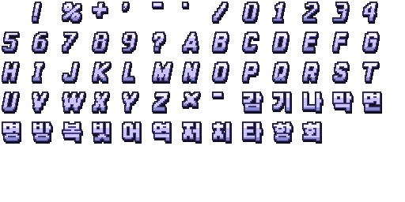

공격 전에 무기를 들어 준비 자세를 보여 줍니다. 접촉 자세에 피해 판정 시점을 맞춥니다. 진화해도 같은 계통의 몸짓과 윤곽을 유지합니다.

기획 의도 이펙트가 겹쳐도 몸의 방향과 무기 자세로 다음 공격과 실제 접촉을 읽게 합니다. 진화 전후에는 같은 계통의 실루엣을 알아볼 수 있게 유지합니다.
먹결 정찰개미는 몸을 낮춰 접근합니다. 도트 시트에서 이동과 공격의 발 기준점을 확인할 수 있습니다.


붉은 바닥 표시가 공격 범위를 예고합니다. 맞는 순간에는 섬광과 짧은 궤적을 표시합니다. 효과가 겹쳐도 체력바를 볼 수 있게 합니다.
기획 의도 어디가 위험하고 언제 실제로 맞았는지 한눈에 읽게 합니다. 다수 교전에서는 장식 파편과 잔향을 먼저 낮춰 체력바와 피아 표식을 살립니다.
범위 공격은 유닛 아래 붉은 테두리와 바닥이 보이는 픽셀 장판으로 예고합니다. 화살은 활에서 방출된 뒤 대상에 닿을 때 섬광을 만들고, 검이나 발톱은 무기 끝 또는 접촉 부위에 짧은 궤적을 남깁니다. 지속 피해 장판은 피해 구간이 끝날 때 닫힙니다.
임태규의 마력 화살비는 모여 있는 적을 맞힙니다. 크리스토퍼 리드의 화염은 적을 즉시 타격합니다. 리드의 예고와 지속 장판은 기획 사양입니다.
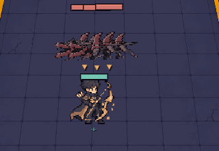
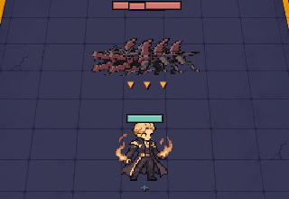
환승역 환경음이 전장에 머무는 동안 흐릅니다. 설치 확정·타격·파견 합류마다 다른 소리가 납니다. 화면을 놓쳐도 진행 상황을 소리로 알 수 있습니다.
기획 의도 작은 전투 화면을 계속 보지 않아도 설치가 확정됐는지, 공격이 적중했는지, 적 파견이 도착했는지 소리로 알아차리게 합니다.
Unity 테스트 빌드는 조작·전투 소리 14개와 전장 환경음을 사용합니다. 배치 확정음은 설치가 끝날 때, 타격음은 피해 이벤트에, 파견 합류음은 상대 전장에서 인컴이 나타날 때 들립니다. 아래는 환승역 환경음과 세 가지 이벤트 소리입니다.
유닛 한 형태에 최대 10색을 써 윤곽을 살립니다. 아군은 청록 받침선, 외신은 주황 삼각형입니다. 같은 청록색이라도 마름모면 인컴으로 구분합니다.


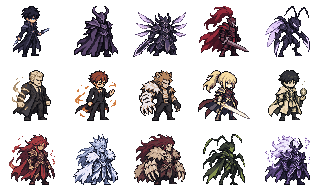
기획 의도 명암이 비슷한 그림자 유닛끼리 겹치거나 카드가 회색인 상태에서도 무기, 몸통 윤곽, 받침 표식으로 대상과 역할을 구별하게 합니다.
캐릭터 한 형태의 불투명 색상은 최대 10개를 사용합니다. 그림자는 검정·흑연색 바탕에 보라색을 눈과 장비 일부에 씁니다. 아군은 우향 도트와 청록 받침선, 외신은 좌향 도트와 주황 역삼각형, 인컴은 좌향 도트와 청록 마름모를 사용합니다.
카드가 작아도 가장 큰 무기나 자세로 구분합니다. 폭 68px와 회색 상태에서 읽히는지 비교했습니다. 재화가 부족하면 카드가 회색으로 바뀝니다.

로컬 대전, 온라인 매칭과 사운드를 구현했습니다. Windows에서 매칭과 기권을 확인했습니다. 안드로이드 앱은 실기기 검증이 남았습니다.
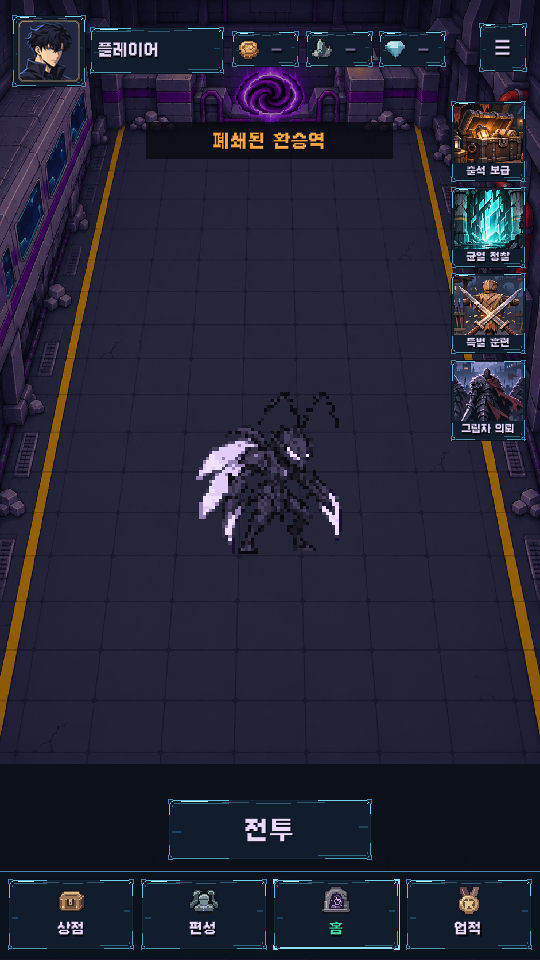
개발 의도 로컬에서 방어·파견과 웨이브 복귀를 검증한 뒤 세로 화면과 온라인 대전을 붙입니다. 화면 표시나 네트워크에서 생긴 오류를 전투 규칙의 문제와 구분해 볼 수 있습니다.
연습전 4웨이브와 두 클라이언트의 매칭·재접속·공용 배치 마감·기권을 확인했습니다. 창을 닫을 때 충돌이 재현됐습니다.
ARM64 테스트 APK의 서명과 에셋을 확인했습니다. 실기기 조작은 확인이 필요합니다.
계정·진행도 영구 저장, 상점 결제, 원작 IP 사용 범위는 출시 단계에 정리할 항목입니다.
아래 경로는 My Project 2 폴더 기준입니다.
Assets/Defense/Defense.unity 씬을 열어 Play를 누릅니다.Builds/Windows/Defense.exe를 실행합니다. 함께 빌드된 데이터·DLL은 실행 파일 옆에 둡니다.Builds/Android/Defense.apk는 Android 8.0 이상용 테스트 빌드입니다.dotnet .\Builds\Server\Defense.Server.dll을 실행합니다. 같은 PC의 두 플레이어는 http://127.0.0.1:7842에 접속합니다.같은 서버에 접속한 두 사람이 대전을 시작합니다. 배치 마감과 파견 유닛의 위치를 양쪽이 공유합니다. 끊긴 뒤 45초 안에 다시 접속할 수 있습니다.
개발 의도 두 플레이어가 같은 마감 시각과 파견 예고를 보고 같은 승패 결과를 받게 합니다. 짧은 연결 끊김에는 이미 확정한 배치를 유지한 채 돌아올 기회를 줍니다.
지휘관 15명 모두 타워 없이 세 웨이브를 버텼습니다. 가장 적게 남은 체력은 최종인의 209/590입니다. 다음에는 진형·파견 시점·채굴을 하나씩 바꿔 봅니다.

검증 의도 한 번에 한 조건만 바꿔 배치, 파견 시점, 채굴 투자 중 무엇이 지휘관 피해와 다음 선택에 영향을 주는지 확인합니다.
확인한 결과 지휘관 15명이 타워·상대 인컴·자동 회복 없이 W1~W3을 연속 통과했습니다. 가장 낮은 잔여 체력은 최종인의 209/590이었습니다. 이 기록은 초반 단독 방어 기준입니다.
다음 측정 같은 상대와 웨이브를 두고 아래 세 조건을 각각 바꿉니다.
레기온 TD 2에서 앞줄이 적을 막는 순간을 봤습니다. 세미온 TD 2에서 배치와 전투 전환을 봤습니다. 우리 게임의 후열 보호와 타워 복귀에 참고했습니다.
레기온 TD 2는 전열의 첫 접촉이 후열의 사격 기회를 어떻게 만드는지, 세미온 TD 2는 마감 뒤 교전 전환과 라운드 복귀가 어떻게 읽히는지 참고했습니다. 게이트 공성전에서는 첫 접촉·후열 첫 공격·돌파와 타워 복귀를 확인 항목으로 삼았습니다.
PC 세로 화면에서 체력바와 설치 칸을 확인했습니다. 카드 선택 중에도 진화창을 열 수 있습니다. 안드로이드 실기기의 터치 조작은 검증 예정입니다.
390×844 Windows 세로 화면에서 지휘관과 기물의 체력바, 드래그 중 점유 표시, 겹침 차단, 카드 선택 상태에서 설치된 타워를 눌렀을 때 진화 창이 열리는 동작을 확인했습니다. Android 실기기 조작은 다음 검증에 포함합니다.
전장과 카드의 스와이프를 분리하고, 드래그 미리보기를 유닛 실루엣으로 단순화했습니다. 새 홈·편성과 첫 연습전은 최신 Unity 시연으로 확인할 수 있습니다.
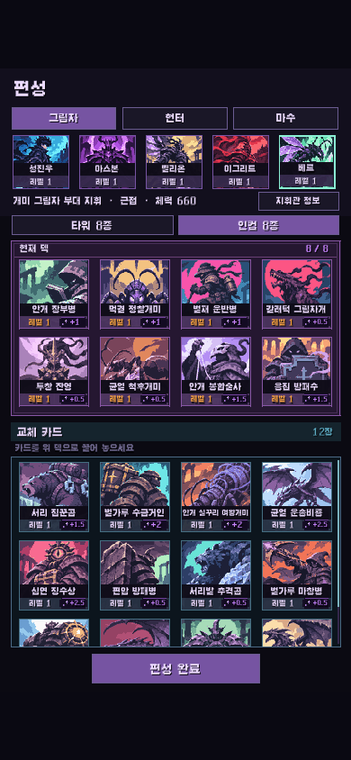
기록 의도 변경한 이유와 확인에 쓰인 화면·조건을 함께 남겨, 이후 수정에서 같은 기준으로 결과를 비교할 수 있게 합니다.